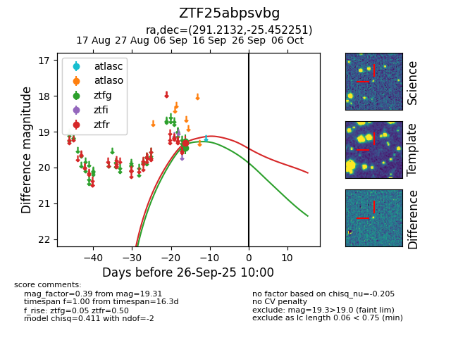
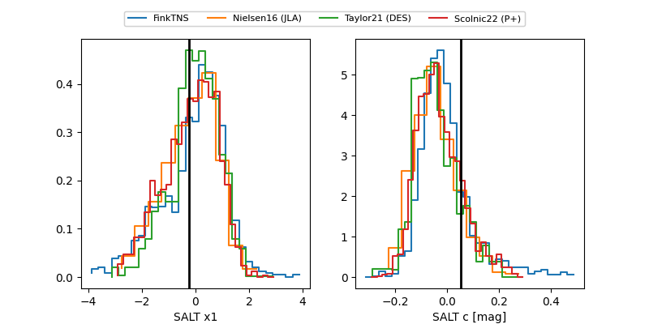

FINK: ZTF25abpsvbg
Lasair: ZTF25abpsvbg
ALeRCE: ZTF25abpsvbg
ZTF25abpsvbg (ztf,fink)
equatorial (ra, dec) = (291.2132,-25.45225)
galactic (l, b) = (13.0734,-18.22292)


last ztfg=19.45, ztfr=19.31
2 ztfg, 1 ztfr detections